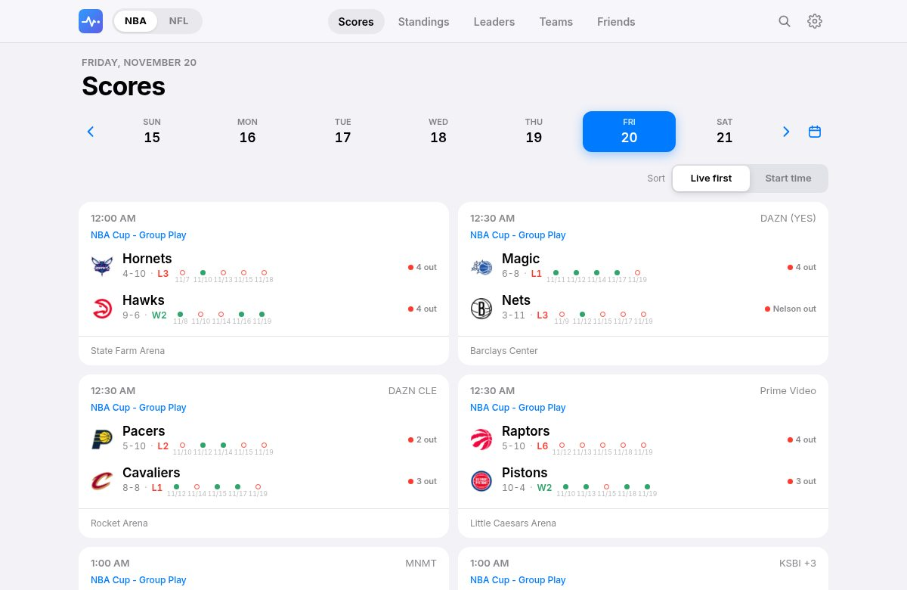
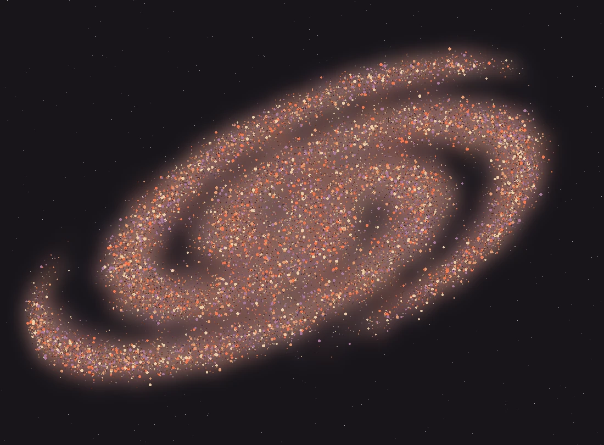
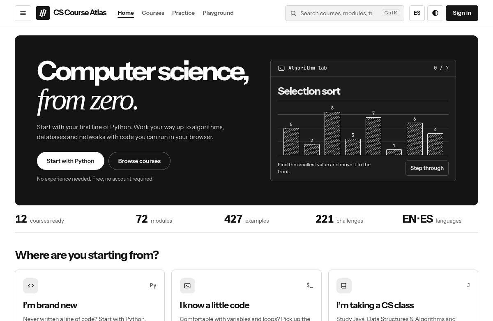
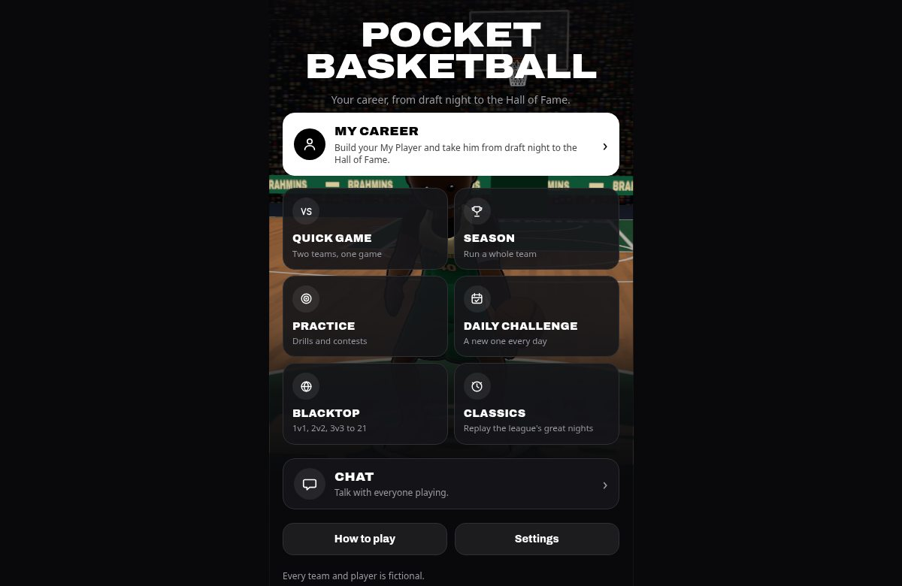

Sports data
NBA & NFL Tracker
Follow live scores and dig into box scores, team standings, and player leaders in one place.
React / Vite

Apple Technical Specialist · Greensboro, NC
I build tools for the help desk, live sports dashboards, and games you can play on your phone.

Sports data
Follow live scores and dig into box scores, team standings, and player leaders in one place.
React / Vite


Computer science education
An interactive computer science guide with in-browser practice, from first steps in Python to algorithms, databases, and networks.

Browser game
A portrait-mode 5-on-5 game for phones, with a 3D arena and a career that starts on draft night.
Support automation
A FastAPI service that sorts help desk tickets by urgency and category and suggests first troubleshooting steps.
View sourceMedia discovery
Browse anime, check what’s airing, and track your episodes with MyAnimeList sync.
I’m Eddy Arriaga-Barrientos, based in Greensboro and bilingual in English and Spanish. Working directly with customers has taught me to explain technical choices clearly and build with the person using the software in mind.
Apple · Since Oct 2025
I troubleshoot hardware, software, and connectivity issues and help customers understand their repair options.
University of North Carolina at Greensboro
Chancellor’s List (Fall 2024) and Alpha Lambda Delta Honor Society.
North Carolina State University · 2024
Studied network defense, incident response, and secure development fundamentals.